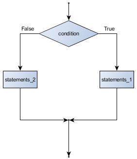
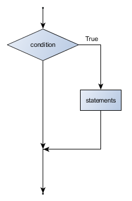
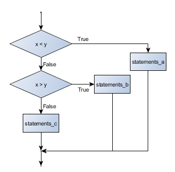
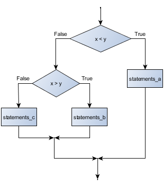

The modulus operator works on integers (and integer expressions) and gives the remainder when the first number is divided by the second. In Python, the modulus operator is a percent sign (%). The syntax is the same as for other operators:
>>> q = 7 // 3 # This is integer division operator >>> print(q) 2 >>> r = 7 % 3 >>> print(r) 1
So 7 divided by 3 is 2 with a remainder of 1.
The modulus operator turns out to be surprisingly useful. For example, you can check whether one number is divisible by another—if x % y is zero, then x is divisible by y.
Also, you can extract the right-most digit or digits from a number. For example, x % 10 yields the right-most digit of x (in base 10). Similarly x % 100 yields the last two digits.
It is also extremely useful for doing conversions, say from seconds, to hours, minutes and seconds. So let’s write a program to ask the user to enter some seconds, and we’ll convert them into hours, minutes, and remaining seconds.
The Python type for storing true and false values is called bool, named after the British mathematician, George Boole. He created Boolean algebra, which is the basis of all modern computer arithmetic.
There are only two boolean values, True and False. Capitalization is important, since true and false are not boolean values.
>>> type(True) <class 'bool'> >>> type(true) Traceback (most recent call last): File "<interactive input>", line 1, in <module> NameError: name 'true' is not defined
A boolean expression is an expression that evaluates to a boolean value. The operator == compares two values and produces a boolean value:
>>> 5 == 5 True >>> 5 == 6 False
In the first statement, the two operands are equal, so the expression evaluates to True; in the second statement, 5 is not equal to 6, so we get False.
The == operator is one of six common comparison operators; the others are:
x != y # x is not equal to y x > y # x is greater than y x < y # x is less than y x >= y # x is greater than or equal to y x <= y # x is less than or equal to y
Although these operations are probably familiar to you, the Python symbols are different from the mathematical symbols. A common error is to use a single equal sign (=) instead of a double equal sign (==). Remember that = is an assignment operator and == is a comparison operator. Also, there is no such thing as =< or =>.
There are three logical operators: and, or, and not. The semantics (meaning) of these operators is similar to their meaning in English. For example, x > 0 and x < 10 is true only if x is greater than 0 and at the same time, x is less than 10.
n % 2 == 0 or n % 3 == 0 is true if either of the conditions is true, that is, if the number is divisible by 2 or divisible by 3.
Finally, the not operator negates a boolean expression, so not(x > y) is true if (x > y) is false, that is, if x is less than or equal to y.
In order to write useful programs, we almost always need the ability to check conditions and change the behavior of the program accordingly. Conditional statements give us this ability. The simplest form is the if statement:
The boolean expression after the if statement is called the condition. If it is true, then all the indented statements get executed. If not, then all the statements indented under the else clause get executed.
Flowchart of a if statement with an else
The syntax for an if statement looks like this:
As with the function definition from the last chapter and other compound statements like for, the if statement consists of a header line and a body. The header line begins with the keyword if followed by a boolean expression and ends with a colon (:).
The indented statements that follow are called a block. The first unindented statement marks the end of the block.
Each of the statements inside the first block of statements are executed in order if the boolean expression evaluates to True. The entire first block of statements is skipped if the boolean expression evaluates to False, and instead all the statements under the else clause are executed.
There is no limit on the number of statements that can appear under the two clauses of an if statement, but there has to be at least one statement in each block. Occasionally, it is useful to have a section with no statements (usually as a place keeper, or scaffolding, for code you haven’t written yet). In that case, you can use the pass statement, which does nothing except act as a placeholder.
Flowchart of an if with no else
Another form of the if statement is one in which the else clause is omitted entirely. In this case, when the condition evaluates to True, the statements are executed, otherwise the flow of execution continues to the statement after the if.
In this case, the print function that outputs the square root is the one after the if - not because we left a blank line, but because of the way the code is indented. Note too that the function call math.sqrt(x) will give an error unless you have an import math statement, usually placed near the top of your script.
Sometimes there are more than two possibilities and we need more than two branches. One way to express a computation like that is a chained conditional:
Flowchart of this chained conditional
elif is an abbreviation of else if. Again, exactly one branch will be executed. There is no limit of the number of elif statements but only a single (and optional) final else statement is allowed and it must be the last branch in the statement:
Each condition is checked in order. If the first is false, the next is checked, and so on. If one of them is true, the corresponding branch executes, and the statement ends. Even if more than one condition is true, only the first true branch executes.
One conditional can also be nested within another. (It is the same theme of composibility, again!) We could have written the previous example as follows:
Flowchart of this nested conditional

The outer conditional contains two branches. The second branch contains another if statement, which has two branches of its own. Those two branches could contain conditional statements as well.
Although the indentation of the statements makes the structure apparent, nested conditionals very quickly become difficult to read. In general, it is a good idea to avoid them when you can.
Logical operators often provide a way to simplify nested conditional statements. For example, we can rewrite the following code using a single conditional:
The print function is called only if we make it past both the conditionals, so we can use the and operator:
The return statement, with or without a value, depending on whether the function is fruitful or not, allows you to terminate the execution of a function before you reach the end. One reason to use it is if you detect an error condition:
The function print_square_root has a parameter named x. The first thing it does is check whether x is less than or equal to 0, in which case it displays an error message and then uses return to exit the function. The flow of execution immediately returns to the caller, and the remaining lines of the function are not executed.
Functions can return boolean values, which is often convenient for hiding complicated tests inside functions. For example:
The name of this function is is_divisible. It is common to give boolean functions names that sound like yes/no questions. is_divisible returns either True or False to indicate whether the x is or is not divisible by y.
We can make the function more concise by taking advantage of the fact that the condition of the if statement is itself a boolean expression. We can return it directly, avoiding the if statement altogether:
This session shows the new function in action:
>>> is_divisible(6, 4) False >>> is_divisible(6, 3) True
Boolean functions are often used in conditional statements:
It might be tempting to write something like:
but the extra comparison is unnecessary.
We’ve had a first look at this in an earlier chapter. Seeing it again won’t hurt!
Many Python types comes with a built-in function that attempts to convert values of another type into its own type. The int(ARGUMENT) function, for example, takes any value and converts it to an integer, if possible, or complains otherwise:
>>> int("32") 32 >>> int("Hello") ValueError: invalid literal for int() with base 10: 'Hello'
int can also convert floating-point values to integers, but remember that it truncates the fractional part:
>>> int(-2.3) -2 >>> int(3.99999) 3 >>> int("42") 42 >>> int(1.0) 1
The float(ARGUMENT) function converts integers and strings to floating-point numbers:
>>> float(32) 32.0 >>> float("3.14159") 3.14159 >>> float(1) 1.0
It may seem odd that Python distinguishes the integer value 1 from the floating-point value 1.0. They may represent the same number, but they belong to different types. The reason is that they are represented differently inside the computer.
The str(ARGUMENT) function converts any argument given to it to type string:
>>> str(32) '32' >>> str(3.14149) '3.14149' >>> str(True) 'True' >>> str(true) Traceback (most recent call last): File "<interactive input>", line 1, in <module> NameError: name 'true' is not defined
str(ARGUMENT) will work with any value and convert it into a string. As mentioned earlier, True is boolean value; true is not.
A powerful technique for debugging, is to insert extra print functions in carefully selected places in your code. Then, by inspecting the output of the program, you can check whether the algorithm is doing what you expect it to. Be clear about the following, however:
You must have a clear solution to the problem, and must know what should happen before you can debug a program. Work on solving the problem on a piece of paper (perhaps using a flowchart to record the steps you take) before you concern yourself with writing code. Writing a program doesn’t solve the problem — it simply automates the manual steps you would take. So first make sure you have a pen-and-paper manual solution that works. Programming then is about making those manual steps happen automatically.
Do not write chatterbox functions. A chatterbox is a fruitful function that, in addition to its primary task, also asks the user for input, or prints output, when it would be more useful if it simply shut up and did its work quietly.
For example, we’ve seen built-in functions like range, max and abs. None of these would be useful building blocks for other programs if they prompted the user for input, or printed their results while they performed their tasks.
So a good tip is to avoid calling print and input functions inside fruitful functions, unless the primary purpose of your function is to perform input and output. The one exception to this rule might be to temporarily sprinkle some calls to print into your code to help debug and understand what is happening when the code runs, but these will then be removed once you get things working.
It is a common best practice in software development these days to include automatic unit testing of source code. Unit testing provides a way to automatically verify that individual pieces of code, such as functions, are working properly. This makes it possible to change the implementation of a function at a later time and quickly test that it still does what it was intended to do.
Unit testing also forces the programmer to think about the different cases that the function needs to handle. You also only have to type the tests once into the script, rather than having to keep entering the same test data over and over as you develop your code.
Extra code in your program which is there because it makes debugging or testing easier is called scaffolding.
A collection of tests for some code is called its test suite.
There are a few different preferred ways to do unit testing in Python — but at this stage we’re going to ignore what the Python community usually does, and we’re going to start with two functions that we’ll write ourselves. We’ll use these for writing our unit tests.
Let’s start with the absolute_value function that we wrote earlier in this chapter. Recall that we wrote a few different versions, the last of which was incorrect, and had a bug. Would tests have caught this bug?
First we plan our tests. We’d like to know if the function returns the correct value when its argument is negative, or when its argument is positive, or when its argument is zero. When planning your tests, you’ll always want to think carefully about the “edge” cases — here, an argument of 0 to absolute_value is on the edge of where the function behaviour changes, and as we saw at the beginning of the chapter, it is an easy spot for the programmer to make a mistake! So it is a good case to include in our test suite.
We’re going to write a helper function for checking the results of one test. It takes two arguments — the actual value that was returned from the computation, and the value we expected to get. It compares these, and will either print a message telling us that the test passed, or it will print a message to inform us that the test failed. The first two lines of the body (after the function’s docstring) can be copied to your own code as they are here: they import a module called sys, and extract the caller’s line number from the stack frame. This allows us to print the line number of the test, which will help when we want to fix any tests that fail.
There is also some slightly tricky string formatting using the format method which we will gloss over for the moment, and cover in detail in a future chapter. But with this function written, we can proceed to construct our test suite:
Here you’ll see that we’ve constructed five tests in our test suite. We could run this against the first or second versions (the correct versions) of absolute_value, and we’d get output similar to the following:
Test on line 24 passed. Test on line 25 passed. Test on line 26 passed. Test on line 27 passed. Test on line 28 passed.
But let’s say you change the function to an incorrect version like this:
Can you find at least two mistakes in this code? Running our test suite we get:
Test on line 24 passed.
Test on line 25 failed. Expected '17', but got '1'.
Test on line 26 failed. Expected '0', but got 'None'.
Test on line 27 passed.
Test on line 28 failed. Expected '3.14', but got '1'.
These are three examples of failing tests.
Evaluate the following numerical expressions in your head, then use the Python interpreter to check your results:
- >>> 5 % 2
- >>> 9 % 5
- >>> 15 % 12
- >>> 12 % 15
- >>> 6 % 6
- >>> 0 % 7
- >>> 7 % 0
What happened with the last example? Why? If you were able to correctly anticipate the computer’s response in all but the last one, it is time to move on. If not, take time now to make up examples of your own. Explore the modulus operator until you are confident you understand how it works.
You look at the clock and it is exactly 2pm. You set an alarm to go off in 51 hours. At what time does the alarm go off?
Write a Python program to solve the general version of the above problem. Ask the user for the time now (in hours), and ask for the number of hours to wait. Your program should output what the time will be on the clock when the alarm goes off.
Assume the days of the week are numbered 0,1,2,3,4,5,6 from Sunday to Saturday. Write a function which is given the day number, and it returns the day name (a string).
You go on a wonderful holiday (perhaps to jail, if you don’t like happy exercises) leaving on day number 3 (a Wednesday). You return home after 137 sleeps. Write a general version of the program which asks for the starting day number, and the length of your stay, and it will tell you the name of day of the week you will return on.
Give the logical opposites of these conditions
- a > b
- a >= b
- a >= 18 and day == 3
- a >= 18 and day != 3
What do these expressions evaluate to?
Write a function which is given an exam mark, and it returns a string — the grade for that mark — according to this scheme:
Mark |
Grade |
|---|---|
>= 75 |
First |
[70-75) |
Upper Second |
[60-70) |
Second |
[50-60) |
Third |
[45-50) |
F1 Supp |
[40-45) |
F2 |
< 40 |
F3 |
The square and round brackets denote closed and open intervals. A closed interval includes the number, and open interval excludes it. So 39.99999 gets grade F3, but 40 gets grade F2. Assume
xs = [83, 75, 74.9, 70, 69.9, 65, 60, 59.9, 55, 50,
49.9, 45, 44.9, 40, 39.9, 2, 0
Test your function by printing the mark and the grade for all the elements in this list.
Modify the turtle bar chart program so that the pen is up for the small gaps between each bar.
Modify the turtle bar chart program so that the bar for any value of 200 or more is filled with red, values between [100 and 200) are filled with yellow, and bars representing values less than 100 are filled with green.
In the turtle bar chart program, what do you expect to happen if one or more of the data values in the list is negative? Try it out. Change the program so that when it prints the text value for the negative bars, it puts the text below the bottom of the bar.
Write a function find_hypot which, given the length of two sides of a right-angled triangle, returns the length of the hypotenuse. (Hint: x ** 0.5 will return the square root.)
Write a function is_rightangled which, given the length of three sides of a triangle, will determine whether the triangle is right-angled. Assume that the third argument to the function is always the longest side. It will return True if the triangle is right-angled, or False otherwise.
Hint: floating point arithmetic is not always exactly accurate, so it is not safe to test floating point numbers for equality. If a good programmer wants to know whether x is equal or close enough to y, they would probably code it up as
if abs(x-y) < 0.000001: # if x is approximately equal to y
...
Extend the above program so that the sides can be given to the function in any order.